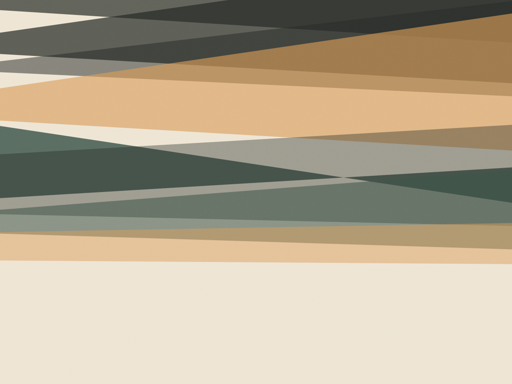

Praia do Rosa · seis suítes
Quatrocentos metros
de areia até a
porta da suíte
A casa abre às seis e meia. O café é às sete, porque quem está aqui acorda cedo — os donos moram no terreno e sabem disso. Não tem recepção 24 horas nem música no corredor.

Três tipos, seis portas
Todas com ventilador de teto e ar-condicionado, porque fevereiro no Rosa não perdoa. Preço por noite, com café incluso.
-
Suíte Jardim
Três unidades no térreo, viradas para o quintal. Cama de casal, varanda com rede e chuveiro externo para tirar a areia.
-
Suíte Mar
Duas unidades no andar de cima, com janela para o leste. É onde se vê o sol nascer sem sair da cama.
-
Casa do Fundo
Uma unidade separada, com dois quartos, cozinha e mesa externa. É a que famílias pegam quando ficam uma semana.
Temporada de julho a novembro: acréscimo de 20% na diária. Mínimo de duas noites o ano inteiro.
Café da manhã
Sete da manhã, na mesa comprida
Servido na mesa de madeira da varanda, das sete às nove e meia. Se você acordar mais tarde, deixamos a bandeja na cozinha.
- Pão de fermentação natural assado na casa, todo dia às cinco
- Queijo e manteiga de produtores de Imbituba e Garopaba
- Café coado em filtro de pano, feito em cima da hora
- Frutas da feira de segunda: banana, mamão, melão e o que houver
- Bolo de fubá ou de laranja, alternado conforme o dia
O que tem em volta
Distâncias medidas a pé, a partir do portão.
- Praia do Rosa400 m · 6 minutos
- Lagoa do Rosa1,2 km · 15 minutos
- Trilha da Praia do Ouvidor2,4 km · 35 minutos
- Padaria e mercado700 m · 9 minutos
- Centro de Imbituba18 km · de carro
Temporada de baleias francas: de julho a novembro, vistas do mirante da Praia do Rosa.
Reserva por telefone
Não temos sistema de reserva online — é a Dora ou o Nilo que respondem. Sinal de 50% por transferência, o resto na chegada.
- Mínimo
- 2 noites
- Sinal
- 50% na confirmação
- Cancelamento
- Devolução total até 15 dias antes
- Check-in / out
- 14h / 11h
“Chegamos de madrugada, com bebê. A Dora deixou a chave na porta e o café pronto na geladeira. Nenhum hotel faz isso.”
“Quarta vez que voltamos. A casa não muda — e é exatamente por isso.”